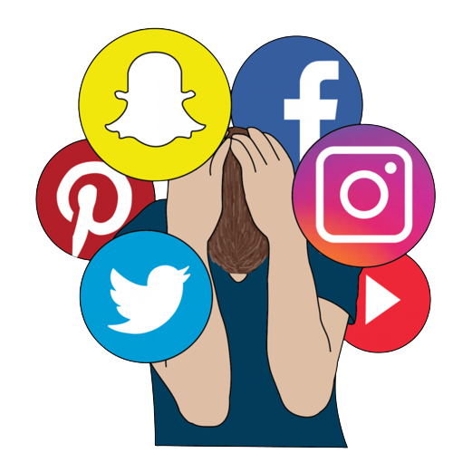

Some of the negative impacts of social media include:
- Cyberbullying and online harassment: Social media platforms can be breeding grounds for bullying and harassment, which can have serious psychological impacts on individuals.
- Addiction: Social media can be addictive, leading to decreased productivity, loss of sleep, and even anxiety and depression.
- Spread of misinformation: Social media can be a source of misinformation and fake news, which can have harmful consequences on society.
- Privacy concerns: Social media platforms often collect and share user data, which can be used for targeted advertising and potentially harmful purposes.
- FOMO (Fear of Missing Out): Social media can create a sense of anxiety and FOMO among users, as they constantly feel the need to keep up with the latest updates and trends.